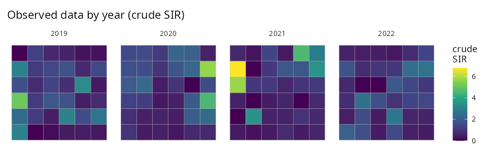
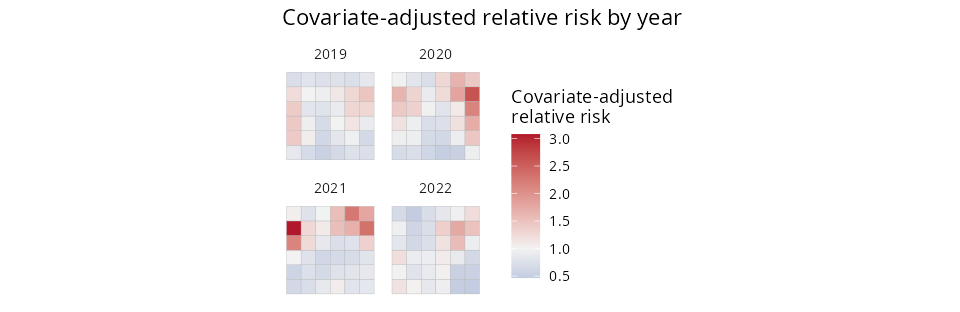
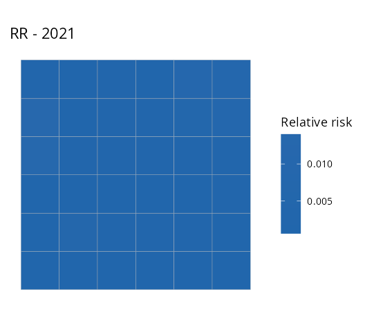
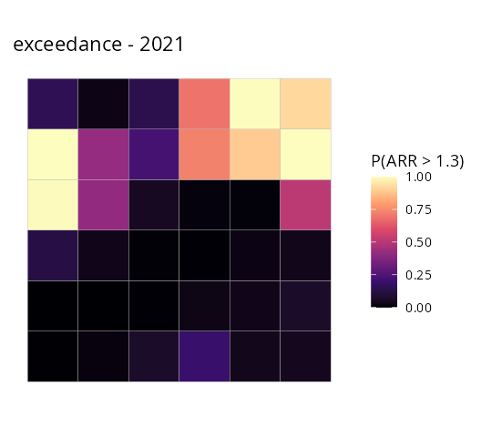

When the same regions are observed at several times, add
time = and SDALGCP2 fits a separable
space–time model. This tutorial is self-contained.
The model
For region
at time
,
counts
with offset
:
with a separable
space–time covariance
i.e. ,
where
is the aggregated spatial correlation (range
)
and
a temporal Matérn correlation (range
).
SDALGCP2 never forms the
covariance — it uses the Kronecker identities
and
— so it scales to many regions and times. The temporal range
is estimated alongside
.
The data
One row per region and time, with the geometry repeated. Here four years on a 6×6 lattice:
library(SDALGCP2)
library(sf)
set.seed(7)
shp <- st_sf(geometry = st_make_grid(
st_as_sfc(st_bbox(c(xmin = 0, ymin = 0, xmax = 18, ymax = 18))), n = c(6, 6)))
N <- nrow(shp); times <- 2019:2022; T <- length(times)
# simulate separable space-time counts (true beta=0.5)
pts <- sda_points(shp, delta = 1.4, method = 3)
Rs <- precompute_corr(pts, 3)$R[, , 1]
Rt <- SDALGCP2:::.temporal_corr(seq_len(T), 1.5, 0.5)
L <- t(chol(0.4 * kronecker(Rt, Rs)))
x1 <- rnorm(N * T); pop <- round(runif(N * T, 1000, 5000))
y <- rpois(N * T, pop * exp(-6 + 0.5 * x1 + as.numeric(L %*% rnorm(N * T))))
dat <- st_sf(
data.frame(cases = y, x1 = x1, pop = pop, year = rep(times, each = N)),
geometry = st_geometry(shp)[rep(seq_len(N), T)])
Fit
fit <- sdalgcp(cases ~ x1 + offset(log(pop)), data = dat, time = "year",
control = sdalgcp_control(reanchor = 2))
summary(fit)#> Coefficients:
#> Estimate Std.Err z value Pr(>|z|)
#> (Intercept) -6.167 0.107 -57.61 <2e-16 ***
#> x1 0.592 0.038 15.73 <2e-16 ***
#> sigma^2 0.491 0.205 2.39 0.017 *
#> nu 0.853 0.360 2.37 0.018 *
#>
#> Spatial scale phi: 2.02nu is the temporal range (correlation length in years);
phi the spatial range.
Predict and map — pick a year and a quantity
predict() returns
matrices of relative risk and covariate-adjusted relative risk (with
standard errors). The plot() method selects a
time and a quantity
("relative_risk", "adjusted_rr",
"relative_risk_se", "adjusted_rr_se",
"exceedance"):
pr <- predict(fit)
plot(pr, time = NULL, what = "adjusted_rr") # facet all years
plot(pr, time = 2021, what = "relative_risk") # relative risk, 2021 only
plot(pr, time = 2021, what = "exceedance", threshold = 1.3, which = "adjusted_rr")Covariate-adjusted relative risk, all years:

| Relative risk, 2021 | P(adjusted RR > 1.3), 2021 |
|---|---|
 |
 |
You can equally call
plot(fit, time = 2021, what = "relative_risk") directly on
the fit, and pr$table is a long data frame (region × time)
of every quantity for further analysis.